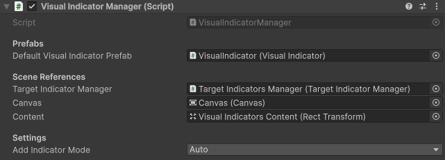
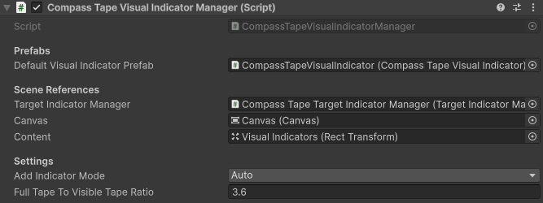

Visual indicator manager component
The visual indicator manager component works with the TargetIndicatorManager and instantiates visual indicator prefabs and updates their state. There are several properties to configure for the component to work.

SerializedFields and properties
The following sections describes each reference and settings of the component:
Default visual indicator prefab
This is a reference to the visual indicator prefab that will be instantiated in the UI by default when a target is added. You can assign this in the inspector or change it at runtime by assigning the DefaultVisualIndicatorPrefab.
Target indicator manager
This is a reference to the TargetIndicatorManager component in the scene that you want this visual indicator manager to interact with and respond to.
Canvas
This is the Canvas the visual indicators will be a part of. This reference is used in the calculation for the position to place visual indicators when the canvas scale changes. The canvas scale can change when using ScreenMatchMode.MatchWidthOrHeight on the CanvasScaler.
Content
This is the RectTransform in the Canvas you want to instantiate your visual indicators and parent them to.
Add indicator mode
This property controls the architectural flow for how visual indicators are instantiated. It dictates whether the VisualIndicatorManager acts as an event-driven listener or a direct orchestrator.
There are two modes:
- Auto: The manager listens to the
TargetIndicatorManager's lifecycle events. When a target is added directly to theTargetIndicatorManager, this component automatically instantiates the default visual indicator prefab. - Manual: The
VisualIndicatorManagerignoresTargetIndicatorManagerlifecycle events for creation. You must explicitly callVisualIndicatorManager.AddTargetIndicatorto register the target and create the UI.
Note
If AddIndicatorMode is set to Auto, calling VisualIndicatorManager.AddTargetIndicator will do nothing.
Manage visual indicators
The VisualIndicatorManager is designed to streamline UI creation so you do not have to manually handle prefab instantiation and UI parenting. How you interact with the API depends on your AddIndicatorMode.
Auto
When set to AddIndicatorMode.Auto, you interact exclusively with the TargetIndicatorManager for adding targets. The VisualIndicatorManager will automatically catch the TargetIndicatorsAdded event and generate the UI.
[SerializeField]
VisualIndicator _defaultVisualIndicatorPrefab;
public void AddVisualTargetInAutoModeExample(
TargetIndicatorManager targetIndicatorManager,
VisualIndicatorManager visualIndicatorManager,
Transform target)
{
// Set `AddIndicatorMode` to auto if it's not set in inspector
visualIndicatorManager.AddIndicatorMode = AddIndicatorMode.Auto;
// Set the default prefab if it's not set in the inspector
visualIndicatorManager.DefaultVisualIndicatorPrefab =
_defaultVisualIndicatorPrefab;
// Add the target directly to `TargetIndicatorManager` without
// adding it to the `VisualIndicatorManager`.
// The `VisualIndicatorManager` will automatically respond to
// the added target and instantiate the default prefab.
var wasAdded = targetIndicatorManager.TryAddTarget(
target, out var targetIndicator);
}
Tip
Want to see Auto mode in action? If you learn best by looking at a working project, check out the "Simple Demo" in the Sample Scenes. It includes a complete script demonstrating this exact event-driven workflow.
Manual
When set to AddIndicatorMode.Manual, you interact with the VisualIndicatorManager API directly. This automatically registers the target with the underlying TargetIndicatorManager and immediately instantiates the visual indicator.
There are two methods for adding a target indicator in this mode:
Add a target with the default prefab Use
AddTargetIndicator(Transform target)to register the target with theTargetIndicatorManagerand instantiate theDefaultVisualIndicatorPrefab.Add a target with a custom prefab Use
AddTargetIndicator(Transform target, VisualIndicator indicatorPrefab)to register the target and instantiate the specificindicatorPrefabpassed as the second argument. Ideal for assigning unique icons per target.
Use this approach if you need tight control over exactly when UI elements are created, or if you need to spawn different prefabs for different targets.
[SerializeField]
VisualIndicator _customVisualIndicatorPrefab;
public void AddVisualTargetInManualModeExample(
VisualIndicatorManager visualIndicatorManager,
Transform target)
{
// Set `AddIndicatorMode` to manual if it's not set in inspector
visualIndicatorManager.AddIndicatorMode = AddIndicatorMode.Manual;
// Add the target directly to `VisualIndicatorManager` without
// adding it to the `TargetIndicatorManager`.
// The `VisualIndicatorManager` will automatically add the
// target to the `TargetIndicatorManager` and instantiate
// the custom prefab for that target.
visualIndicatorManager.AddTargetIndicator(
target, _customVisualIndicatorPrefab);
}
Tip
Want to see Manual mode in action? Check out the "Multiple Categories Demo" in the Sample Scenes. It includes a complete script demonstrating how to use this mode to explicitly assign custom prefabs to different target categories.
Additional useful APIs
When managing the visibility or lifecycle of existing indicators, use the following APIs. Each of these methods requires the TargetIndicatorId associated with the target.
Hide a visual indicator
Use VisualIndicatorManager.HideVisualIndicator(TargetIndicatorId id) to hide the core and rotation content of a visual indicator without disabling the component at the root. Use this to temporarily hide a visual indicator if you don't want to destroy it.
Show a visual indicator
Use VisualIndicatorManager.ShowVisualIndicator(TargetIndicatorId id) to show the core and rotation content of a visual indicator that was previously hidden. Use this to reveal hidden indicators from HideVisualIndicator. Visual indicators are shown by default when first instantiated.
Remove a target indicator
Use VisualIndicatorManager.RemoveTargetIndicator(TargetIndicatorId id) to completely remove a target from the target indicator manager and destroy its UI GameObject. Use this when you are entirely done tracking a target.
Compass tape visual indicator manager
The CompassTapeVisualIndicatorManager inherits from VisualIndicatorManager and is specialized for handling target indicator managers with a CompassTape boundary type. It follows the same setup pattern. Use this class as an example to inherit the base visual indicator manager overriding the functionality with custom behavior.
It requires a special implementation of CompassTapeVisualIndicator prefab for its DefaultVisualIndicatorPrefab. Refer to compass tape visual indicator for more information.

Full tape to visible tape ratio
This is a unique property on the CompassTapeVisualIndicatorManager that is used for calculating the position on the compass tape's RectTransform to place the visual indicator. The value represents the ratio between the full tape and the visible tape. For example, if the full tape is twice the length of the visible tape this value would be 2.
Refer to compass tape boundary type to learn more about how compass tapes work.
Performance considerations and limitations
The VisualIndicatorManager and its associated components are provided as a prebuilt, general-purpose solution to get target indicators rendering on screen with minimal setup. It serves as an excellent jumping-off point for prototypes, straightforward use cases, or developers who want a simple, out-of-the-box UI system.
However, unlike the underlying TargetIndicatorManager, it has architectural limitations that you should consider for performance-critical applications:
- Garbage Collection (GC): The manager relies on standard
Instantiate()andDestroy()calls to manage the UI lifecycle. In highly dynamic games where targets are frequently added and removed, this will create GC pressure and memory fragmentation. - No Built-in Pooling: It does not utilize object pooling by default, meaning every new target incurs the overhead of crossing the C#/C++ bridge to spawn a new GameObject.
Building custom visual indicators
The core TargetIndicatorManager is designed to be highly performant and completely allocation-free during its update loops, passing memory-safe buffers via ReadOnlySpan<T>.
If your project requires strict zero-allocation in hot paths, or if you need highly specialized visual logic, such as UI Toolkit integration, visual effects or animations, it's highly recommend building your own custom UI manager directly on top of the TargetIndicatorManager.
To leverage the high-performance data layer in a custom, production-ready visual system:
- Implement Object Pooling: Instead of instantiating and destroying UI prefabs, pre-allocate a pool of visual indicator GameObjects (or UI Toolkit visual elements) during initialization.
- Listen to Lifecycle Events: Subscribe your custom manager to the
TargetIndicatorsAdded,TargetIndicatorsUpdated, andTargetIndicatorsRemovedevents. - Process Spans: Iterate over the zero-allocation
ReadOnlySpan<TargetIndicator>provided by those events. Grab inactive elements from your pool when targets are added, update their screen poses using the span data, and return them to the pool when targets are removed.
You can use the source code of VisualIndicatorManager.cs as a reference for how to interface with the core API while swapping out the standard instantiation logic for your own robust, low-GC architecture.